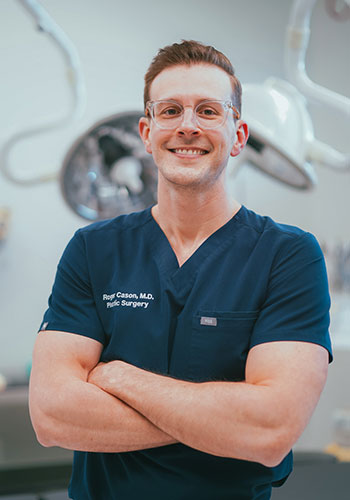

Board-Certified Plastic Surgeon · Dallas, TX
Dr. Roger Cason brings Duke-trained surgical expertise and a meticulous eye for natural results to every procedure.

Dr. Roger Cason is a board-certified plastic surgeon whose journey to aesthetic surgery began with one of the most rigorous training programs in the country — a six-year residency in plastic and reconstructive surgery at Duke University Medical Center.
At Duke, he mastered the full spectrum of plastic surgery: complex microsurgical reconstruction, craniofacial surgery, hand surgery, and every dimension of aesthetic surgery. That foundation in reconstruction — rebuilding what's broken — is what makes his aesthetic work exceptional. He doesn't just know what looks good. He understands the architecture underneath.
With 25+ published papers and textbook chapters, Dr. Cason isn't just practicing plastic surgery — he's advancing it. His patients benefit from a surgeon who stays at the cutting edge of technique and evidence.
Each procedure is tailored to your unique anatomy and goals. Dr. Cason believes the best results are the ones that look like you — only better.
Nose reshaping that enhances facial harmony while preserving natural character. Specializing in both primary and complex revision cases.
Learn moreRestore natural youthfulness by addressing sagging skin, deep folds, and lost volume. Results that refresh — never pulled or "done."
Learn moreA customized combination of procedures — typically tummy tuck and breast surgery — designed to restore your pre-pregnancy body.
Learn moreFlatten and contour the abdomen with meticulous incision placement designed to hide within your natural bikini line.
Learn moreMore than just size — shape, projection, placement, and proportion are all considered to create results that look and feel natural.
Learn moreEyelid rejuvenation that removes excess skin and restores a refreshed, alert appearance with minimal downtime.
Learn moreIn a city with no shortage of plastic surgeons, Dr. Cason offers something rare: nationally elite training, a research-driven approach, and the personal attention of a boutique practice.
Six years at Duke University Medical Center — one of the nation's top academic surgical programs. Not every surgeon's training is created equal.
With 25+ peer-reviewed publications, Dr. Cason doesn't just follow the latest techniques — he helps develop them. Your care is backed by evidence, not trends.
Trained in the most complex reconstructive cases — microsurgery, craniofacial work, trauma. That deep structural understanding elevates every aesthetic result.
From your first consultation through every follow-up, you see Dr. Cason — not a rotating team. Boutique care means unhurried attention at every step.
From your first call to your final follow-up, every step is guided by Dr. Cason personally.
A thorough, unhurried conversation with Dr. Cason. No sales pressure — just an honest assessment of your goals and what's realistically achievable.
A custom surgical plan built around your unique anatomy, lifestyle, and aesthetic goals. Every detail is explained clearly so you feel confident moving forward.
Meticulous surgical technique in an accredited facility with a safety-first approach. Dr. Cason performs every procedure himself — start to finish.
Your recovery matters as much as the surgery itself. Every follow-up appointment is with Dr. Cason — never handed off to staff. He's invested in your outcome.
Sample testimonials for demonstration purposes
"Dr. Cason took the time to really listen to what I wanted. My rhinoplasty results look completely natural — my friends just say I look 'refreshed.' That's exactly what I was hoping for."
— Sample Patient, Rhinoplasty
"After three kids, I didn't feel like myself anymore. The mommy makeover Dr. Cason designed for me gave me my confidence back. His team made the whole experience feel safe and personal."
— Sample Patient, Mommy Makeover
"I'd been to two other surgeons for my revision rhinoplasty and neither would take the case. Dr. Cason not only took it on — he explained every detail of his plan. The result exceeded my expectations."
— Sample Patient, Revision Rhinoplasty
We believe informed patients make the best decisions. Here are answers to some of the questions we hear most often.
Good candidates are generally in good overall health, have realistic expectations, and are motivated by personal goals rather than external pressure. During your consultation, Dr. Cason will evaluate your health history, discuss your goals in depth, and give you an honest assessment of what's achievable. If a procedure isn't right for you, he'll tell you.
Your consultation is a private, unhurried conversation with Dr. Cason. He'll listen to your goals, examine the area of concern, explain your options in plain language, and answer every question you have. You'll leave with a clear understanding of what's possible, what to expect during recovery, and a personalized plan. There's never any pressure to schedule.
Recovery varies by procedure. Eyelid surgery patients often return to normal activities within a week. Rhinoplasty typically requires 10 to 14 days before social downtime ends, though full settling takes up to a year. Facelift recovery is usually two to three weeks. Tummy tucks and mommy makeovers require two to four weeks of limited activity. Dr. Cason will give you a detailed, personalized recovery timeline during your consultation.
Yes. Dr. Cason is certified by the American Board of Plastic Surgery, which is the only board recognized by the American Board of Medical Specialties for the full scope of plastic surgery. This certification requires completing an accredited residency in plastic surgery and passing rigorous written and oral examinations. It's the gold standard in surgical credentialing.
Natural-looking results are Dr. Cason's signature. His approach is guided by your existing anatomy and proportions, not a one-size-fits-all template. His background in reconstructive surgery means he deeply understands the structural relationships of the face and body. The goal is always for people to notice that you look great — not that you've had surgery.
We want to make your goals accessible. Our office works with several financing partners to offer payment plans that fit your budget. During your consultation, our patient coordinator can walk you through all available options so you can make the best decision for your situation.
While revisions are uncommon with careful surgical planning, Dr. Cason is experienced in revision surgery and handles complex cases that other surgeons may not take on. If a touch-up or revision is needed, he'll discuss your options candidly. His reconstructive training gives him the skills to address even the most challenging revision scenarios.
Before your procedure, you'll receive detailed pre-operative instructions tailored to your specific surgery. General guidelines include avoiding certain medications, stopping smoking well in advance, arranging for someone to drive you home, and preparing a comfortable recovery space. Dr. Cason and his team will walk through everything step by step so you feel fully prepared.
All procedures are performed in an accredited surgical facility that meets the highest standards for patient safety. The facility is equipped with advanced monitoring technology and staffed by experienced anesthesiologists and surgical nurses. Your safety and comfort are the top priorities from the moment you arrive.
Go behind the scenes with Dr. Cason on Instagram. Educational content, real results, and a look inside the art and science of plastic surgery.
Every transformation starts with a conversation. Schedule a consultation to discuss your goals and discover what's possible.
2301 Westgate Plaza
Grapevine, TX 76051
(817) 442-1236
Mon-Fri: 9am - 5pm
Sat: By appointment
Fill out the form below and our team will be in touch within 24 hours.